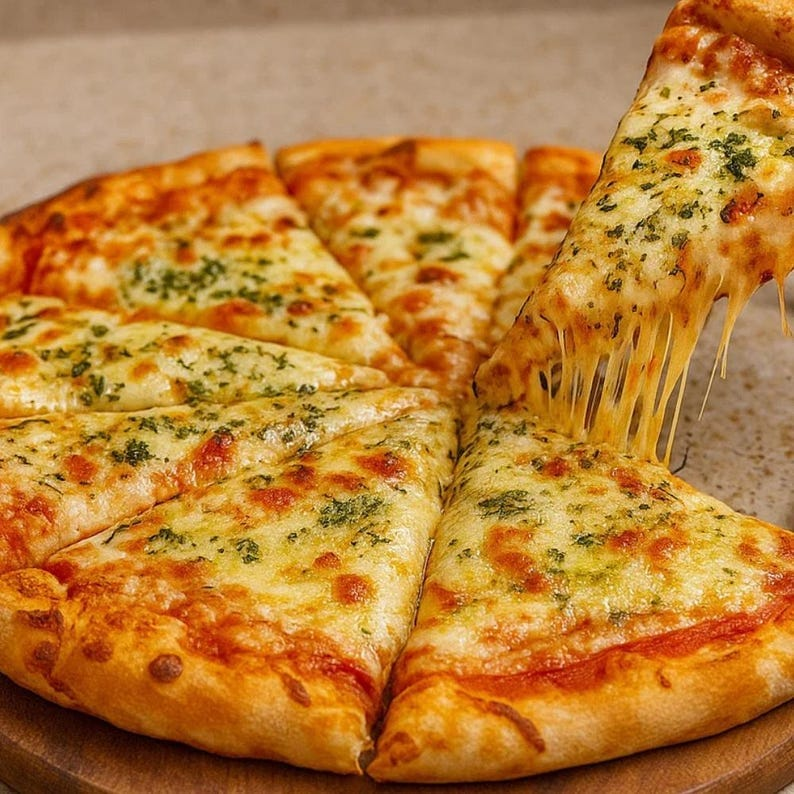

Pizza
Home

Ingredients
- Pizza dough (homemade or store-bought)
- Pizza sauce (tomato-based)
- Mozzarella cheese (shredded)
- Olive oil (for brushing crust)
- Dried oregano (herb seasoning)
- Dried basil (or fresh basil leaves)
- Garlic (optional, for flavor)
- salt to taste
Procedure
- Preheat the oven.:Set oven to 250°C (or highest). Put a pizza stone or an inverted baking sheet in the oven while it heats. Preheat at least 20–30 minutes so the surface is very hot.
- Bring dough to room temperature.If dough is refrigerated, take it out 30–60 minutes before shaping so it becomes pliable.
- Shape the dough.Lightly flour your work surface. Press the dough from center outward with fingertips, stretch with your knuckles while rotating until you get a ~12″ (30 cm) circle. Keep a slightly thicker rim for the crust.
- Prepare the baking surface.Transfer the stretched dough onto a piece of parchment (or a floured pizza peel). Dust with semolina or flour so it slides easily.
- Brush the crust.Lightly brush the outer rim with a little olive oil — helps browning.
- Add sauce.Spoon ~½ cup pizza sauce into the center and spread evenly, leaving a 1–1.5 cm (½ inch) rim.
- Flavor base (optional).Sprinkle minced garlic over the sauce if using. Add a tiny pinch of salt to balance the tomato sauce if needed.
- Cheese time.Evenly spread the shredded mozzarella across the pizza. Add a little grated parmesan if you like extra flavor.
- Bake.Slide pizza (with parchment) onto the hot stone or baking tray. Bake 8–12 minutes at 250°C until the crust is golden and cheese is bubbly. If your oven is weaker, bake at 220°C for 12–15 minutes. For extra char, broil 1–90 seconds at the end — watch carefully.
Home